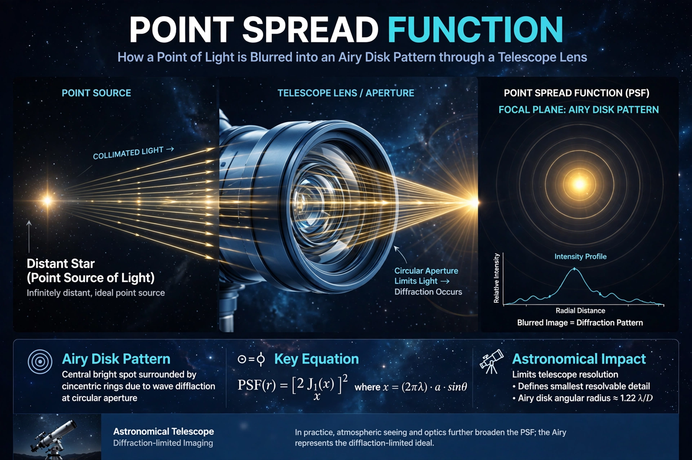

The point spread function (PSF) describes the response of an imaging system to a point source or point object. It is the impulse response of a focused optical system; the image of an extended object is the convolution of its true image with the PSF.
| Point spread function | |
|---|---|
 |
For an ideal circular aperture the PSF is the Airy pattern. Aberrations, diffraction and atmospheric seeing broaden it, limiting resolution. In astronomy, seeing dominates ground-based PSFs; adaptive optics sharpens them.
PSF knowledge enables deconvolution in microscopy, astronomy and medical imaging, and photometry of stars. Related concepts include the optical transfer function and modulation transfer function.